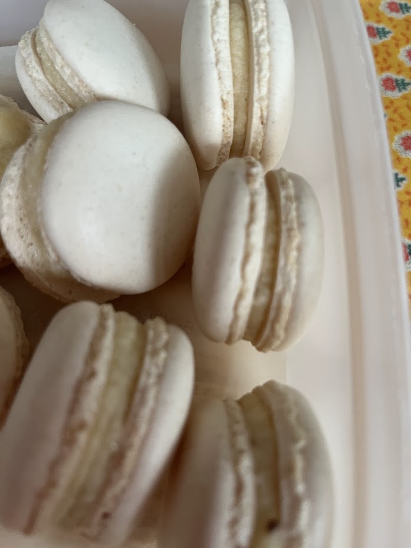
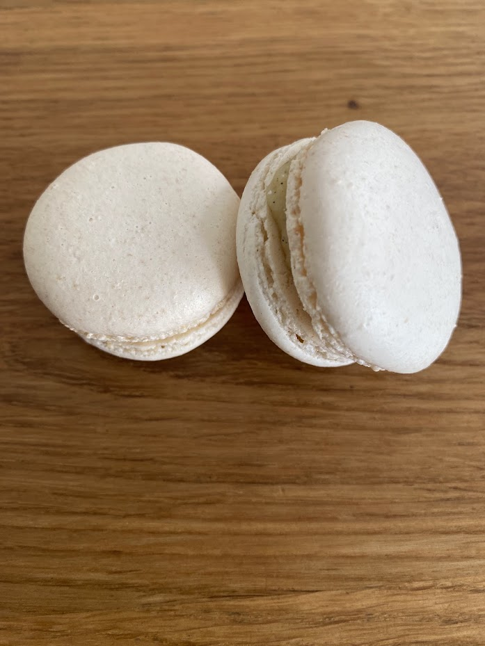

Macarons à la vanille
⏱️ 25 min de cuisson
🔥 Technique : meringue italienne
👥 Environ 30 macarons



Étapes
Base de macarons
- Mettre la poudre d'amande et le sucre glace dans un mixeur. Mixer 2 à 3 minutes (facultatif).
- Tamiser l'ensemble.
Meringue italienne
- Verser le sucre semoule et l'eau dans une casserole. Chauffer sur feu modéré.
- À 110°C, commencer à monter les blancs en neige avec la crème de tartre.
- Quand le sirop atteint 117°C, le verser en filet sur les blancs tout en fouettant.
- Continuer à fouetter jusqu’à obtenir une meringue brillante et tiède.
Macaronnage
- Ajouter la meringue italienne au tant pour tant.
- Macaronner : rabattre la pâte jusqu’à obtenir un ruban lisse.
- Pocher des petits disques sur une plaque recouverte de papier cuisson.
- Laisser croûter 20 à 30 minutes.
- Cuire 12 à 14 minutes à 150°C.
Garniture vanille
- Mettre l’œuf et 50 g de sucre dans un bol. Fouetter légèrement puis ajouter la maïzena.
- Mettre 70 g de sucre + l’eau + la gousse de vanille + sucre vanillé + vanille en poudre dans une casserole. Faire bouillir.
- Arrêter la cuisson et laisser infuser 10 minutes.
- Verser le sirop sur le mélange œuf-sucre. Mélanger.
- Remettre dans la casserole et cuire doucement en remuant jusqu’à épaississement (82°C).
- Hors du feu, ajouter la gélatine essorée.
- Ajouter la poudre d’amande.
- Ajouter le beurre en morceaux. Mélanger.
- Laisser refroidir. Quand la crème commence à prendre, la mettre en poche.
- Garnir les coques et assembler les macarons.
- Laisser au frais une nuit avant dégustation.